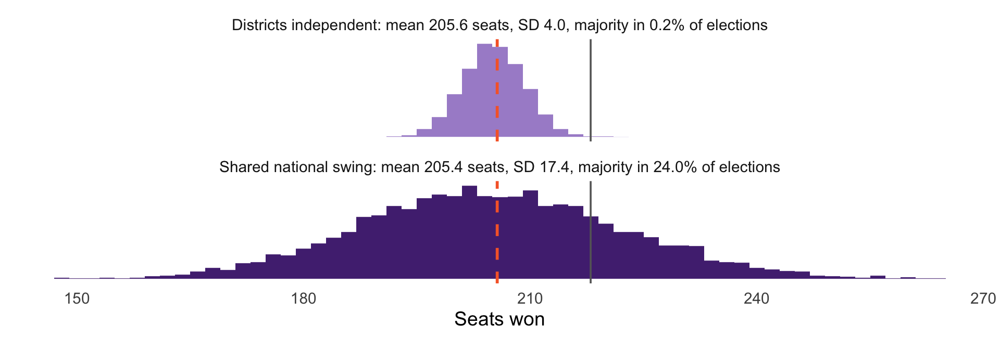
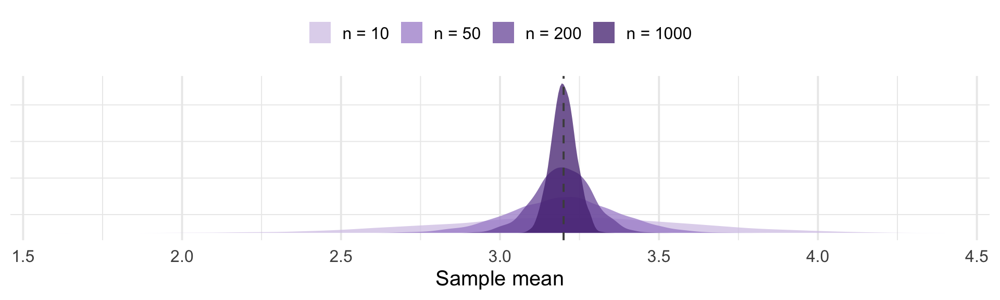

[1] 3.2Center and Spread Revisited
We can describe a discrete random variable completely with its PMF
But a PMF is a whole table. We usually want a summary.
In Week 2 we summarized data with a mean and a standard deviation
Today we do the same for a distribution.
The expected value of \(X\) is its long-run average: the value you would converge to if you could draw from the distribution forever
It is a weighted average of the possible values, weighted by how probable each is
Summing over the support \(x_1, x_2, \ldots\) (last class’s notation):
\[E[X] = \sum_{j} x_j \, P(X = x_j)\]
Note what this is not: it need not be a value \(X\) can actually take. The expected number of children per family is not an integer.
A five-point agreement scale, with the population distribution of responses:
| \(x\) | 1 | 2 | 3 | 4 | 5 |
|---|---|---|---|---|---|
| \(P(X = x)\) | 0.10 | 0.20 | 0.25 | 0.30 | 0.15 |
\(E[X] = 3.2\). No respondent can answer 3.2, but that is the population average, and it is what a survey tries to estimate.
If \(X \sim \text{Bern}(p)\), then \(X\) takes only the values 0 and 1:
\[E[X] = 0 \cdot (1-p) + 1 \cdot p = p\]
The expected value of an indicator is just the probability of the event
“The expected callback rate” and “the probability of a callback” are the same number
This equivalence is used constantly
For any random variables \(X\) and \(Y\), and constants \(a\) and \(b\):
\[E[aX + bY] = a\,E[X] + b\,E[Y]\]
The expectation of a sum is the sum of the expectations
This holds whether or not \(X\) and \(Y\) are independent
Why care?
Recall affect_gap from Week 2: Biden thermometer minus Trump thermometer. Those two ratings are about as far from independent as survey items get. (why?)
This is what linearity of expectation is giving us.
A random variable is a function on the sample space, so we can average over outcomes \(s\) rather than values (grouping outcomes by their value of \(X\) gives back the usual formula):
\[E[X] = \sum_{s} X(s)\, P(\{s\})\]
For any \(X\) and \(Y\) on the same sample space:
\[\begin{aligned} E[X + Y] &= \sum_{s} \big(X(s) + Y(s)\big)\, P(\{s\}) \\ &= \sum_{s} X(s)\, P(\{s\}) + \sum_{s} Y(s)\, P(\{s\}) = E[X] + E[Y] \end{aligned}\]
\(X \sim \text{Bin}(n, p)\) is the sum of \(n\) Bernoulli trials: \(X = X_1 + X_2 + \cdots + X_n\).
By linearity:
\[E[X] = E[X_1] + \cdots + E[X_n] = \underbrace{p + p + \cdots + p}_{n \text{ times}} = np\]
No need to get complicated here, just use linearity
Our book calls this a story proof: the answer follows from what the variable is
Bertrand and Mullainathan sent 2,435 résumés per group. If \(p = 0.08\), we expect \(2435 \times 0.08 \approx 195\) callbacks.
A forecast gives a party a win probability in each of the 435 House districts. How many seats should it expect?
The hard way: a probability for each of the \(2^{435}\) (about \(10^{131}\)) combinations of wins and losses. A national swing introduces dependency, so no one can write that joint distribution down. (This dependency is super important for the uncertainty, though!)
With linearity: seats \(= I_1 + \cdots + I_{435}\), where \(I_i\) indicates a win in district \(i\) and \(E[I_i] = P(\text{win}_i)\):
\[E[\text{seats}] = \sum_{i=1}^{435} P(\text{win}_i)\]

Dashed orange line: \(\sum_i P(\text{win}_i)\). Grey line: 218, a majority.
The district probabilities are identical in both cases. The spreads are not, and therefore neither are the odds of winning the House. Spread depends on how the districts move together. We will learn how to get the variance shortly.
A party contests four districts, with win probabilities 0.8, 0.6, 0.5, and 0.2. What is its expected number of seats?
Did you need to know whether the four races are independent?
What is the probability it wins all four? What would you need to know to answer?
This distinction is very important!
\(E[X]\) is a property of the distribution. A fixed number that comes from the data generating process.
\(\bar{x}\) is computed from data. A different sample would give a different value.
Greek letters for the unknown truth, so we write \(\mu\) for \(E[X]\) (and soon \(\sigma\) for its standard deviation); Latin letters (\(\bar{x}\), \(s\)) for what we compute. I know this is a little weird; I’m just the messenger!
\(E[X]\) tells you where the distribution is centered; but we also care about the spread.
Two policies with the same expected cost can carry very different ‘tail risk’
We want a measure of how far from \(E[X]\) realizations of \(X\) typically fall
\[\text{Var}[X] = E\big[(X - E[X])^{2}\big]\]
Why not just \(E[X - E[X]]\)?
That is always zero: positive and negative deviations cancel exactly
Squaring removes the sign, and makes large deviations count disproportionately
In practice: a weighted average of squared distance from the mean
\[\text{Var}[X] = E[X^{2}] - \big(E[X]\big)^{2}\]
Usually much easier to compute. And the standard deviation puts us back in the original units:
\[SD(X) = \sqrt{\text{Var}[X]}\]
We do algebra with variance, and we interpret standard deviations.
\(\text{Var}[X + c] = \text{Var}[X]\): shifting a distribution does not change its spread
\(\text{Var}[cX] = c^{2}\,\text{Var}[X]\) note the square comes out
\(\text{Var}[X] > 0\) unless \(X\) is a constant
That second one is harder to follow, but matters. Doubling a variable quadruples its variance, etc.
\[\text{Var}[X + Y] = \text{Var}[X] + \text{Var}[Y] \quad \textbf{if } X \perp Y\]
Expectation adds up always. Variance adds up under independence.
If \(X\) and \(Y\) move together, the variance of their sum is larger than the sum of their variances (like the national-swing elections)
This is why we need special standard errors for clustered data: observations within a cluster are not independent
Important to remember: The default measures of uncertainty are often biased downwards.
Start with a single Bernoulli. Since \(X_i\) is 0 or 1, \(X_i^{2} = X_i\), so \(E[X_i^2] = p\):
\[\text{Var}[X_i] = \rlap{E[X_i^{2}] - E[X_i]^{2}}\phantom{p - p^{2} = p(1-p)}\]
\[\phantom{\text{Var}[X_i]} = p - p^{2} = p(1-p)\]
A binomial is a sum of \(n\) independent Bernoullis, so the variances add:
\[\text{Var}[X] = np(1-p)\]
The population is a random variable \(X\), and we name its summaries with Greek letters: \(\mu = E[X]\) and \(\sigma^{2} = \text{Var}[X]\). For our five-point scale, \(\mu = 3.2\).
Plan a survey of \(n\) people. Before it is fielded, each answer is a random variable: \(X_1, \ldots, X_n\)
Each is a draw from the same population, so \(E[X_i] = \mu\) for every \(i\) (the “identically distributed” in iid, from last week)
Their average is a random variable too: \(\bar{X} = \displaystyle\frac{1}{n}\sum_{i=1}^{n} X_i\)
Field the survey and you get one number, \(\bar{x}\): a single realization of \(\bar{X}\). A different sample gives a different \(\bar{x}\).
Capital letters are the random version; lowercase letters are the numbers you actually computed.
Let \(X_1, \ldots, X_n\) be draws from a distribution with mean \(\mu\). Linearity says:
\[E[\bar{X}] = E\left[\frac{1}{n}\sum_{i=1}^{n} X_i\right] = \frac{1}{n}\sum_{i=1}^{n} E[X_i] = \mu\]
The sample mean is unbiased: on average it lands on \(\mu\) (more when we get to estimators)
No independence needed. A clustered survey, four people per household, still gives an unbiased mean.
Now make the draws independent, each with variance \(\sigma^{2}\):
\[\begin{aligned} \text{Var}[\bar{X}] &= \text{Var}\left[\frac{1}{n}\sum_{i=1}^{n} X_i\right] = \frac{1}{n^{2}}\sum_{i=1}^{n} \text{Var}[X_i] \\ &= \frac{n\sigma^{2}}{n^{2}} = \frac{\sigma^{2}}{n} \end{aligned}\]
We used \(\text{Var}[cX] = c^{2}\text{Var}[X]\), then independence to add
\(SD(\bar{X}) = \sigma/\sqrt{n}\)
The sample mean is less variable than a single observation
Its spread shrinks with \(\sqrt{n}\), not \(n\)
To halve your uncertainty, you need four times the data
This is why we generally don’t bother getting a huge sample size; the decrease in variance is not linear.

Four thousand simulated surveys at each sample size, drawing from our five-point scale.
| n | SD of sample means (simulated) | sigma / sqrt(n) (predicted) |
|---|---|---|
| 10 | 0.3795 | 0.3821 |
| 50 | 0.1654 | 0.1709 |
| 200 | 0.0864 | 0.0854 |
| 1000 | 0.0386 | 0.0382 |
The formula we derived from two variance properties predicts the simulation almost exactly. This is the why we can calculate confidence intervals and error bars
A bill passes each of 12 independent committee votes with probability 0.7. What are \(E[X]\) and \(\text{Var}[X]\) for the number that pass?
A survey of 400 voters estimates turnout, where the true rate is 0.6. What is \(SD(\bar{X})\)?
How large a sample would you need to cut that standard deviation in half?
Your 400 respondents come from 100 households, 4 people each. Why is the answer to (2) probably too optimistic?
Read: Probability!, Ch. 4, “Discrete vs. Continuous” and “LoTUS”
Next class: a calculus refresher, and the jump from discrete to continuous random variables
Sums become integrals
PMFs become densities
The ideas do not change